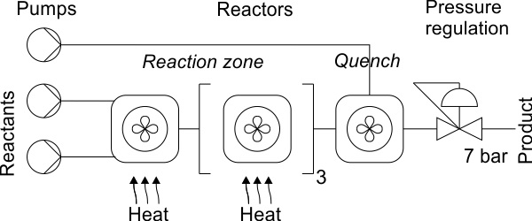

Continuous Flow Systems For Chemistry on the Cheap

Continuous Flow Systems run chemical reactions by continuously flowing reactants past each other. Pumps control fluid channels holding the reagents and chemical reactions occur at intersections of those pumps. It's the chemistry version of the Lab On a Chip. Flow chemistry doesn't have to be small-scale, it's used in industrial manufacturing, but it can be a powerful tool in the lab as well. The only thing is that cost barrier, when we asked various companies for quotes, we were told it would be ~$20,000 for the bare bones models. The lowest quote we received was $14,500 from the Syrris brand of Blacktrace , for a Educational Flow Chemistry System.
One very cheap device is the fReactor which sells as a kit through Asynt that we were quoted would be a little less than $2700. The device sits on top of a conventional laboratory hotplate-stirrer.
If you really want to Do-It-Yourself, Matthew Penny, Zenobia Rao, Bruno Peniche, and Stephen Hilton have recently put up a paper on the Chemrxiv detailing how to make a Modular 3D Printed Compressed Air Driven Continuous-Flow System. The paper doesn't have Supplementary Materials up yet though, so we'll all have to wait for the CAD designs used in the paper.
As a note, the paper actually thanks Asynt at the end of it, as well as Uniqsis which is another side of Asynt partnered with Grant Instruments, and use the Asynt DrySyn as part of their apparatus.